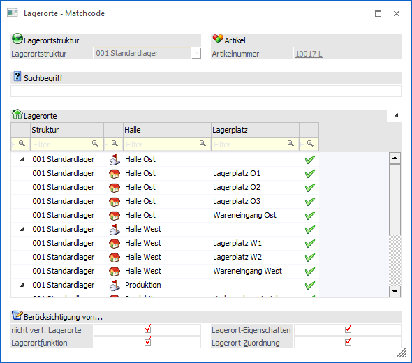
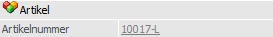
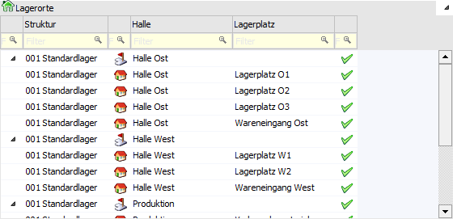

Wenn der Fokus in dem Feld "Lagerort" liegt und das Lupen-Symbol bzw. die Taste F9 gedrückt wird, dann öffnet sich das Programm "Lagerorte - Matchcode". An dieser Stelle kann gezielt nach Lagerorten gesucht werden.
Hinweis
Wenn in dem Feld "Lagerort" ein Teil des Suchbegriffs eingetragen wurde und die Taste F9 gedrückt wird, dann wird diese Eingabe in das Feld "Suchbegriff" übernommen und die Suche direkt gestartet.

Für die Suche stehen folgende Felder zur Verfügung:
Lagerortstruktur
Ø Lagerortstruktur
An dieser Stelle kann die Lagerortstruktur für die Suche gewählt werden. Dieses ist allerdings nur möglich, wenn die Struktur nicht bereits aufgrund des Ausgangsfensters feststeht.
Beispiel
In dem Programm Lagerorte - Zuordnung soll für einen Artikel eine Zuordnung erfasst werden. Durch die Erfassung der Artikelnummer steht die Lagerortstruktur bereits fest und kann im "Lagerorte - Matchcode" nicht editiert werden.
Artikel

Ø Artikelnummer
Wenn im Ausgangsfenster eine Artikelnummer angegeben wurde, so wird diese automatisch an den Matchcode übergeben und hier dargestellt.
Suchbegriff
Ø Suchbegriff
Die Anzeige bzw. Auswahl der Lagerorte kann durch die Eingabe eines Suchbegriffs eingeschränkt werden. Die Suche erfolgt hierbei in jenen Feldern, die in der Tabelle "Lagerorte" angezeigt werden (im Standard "Struktur und "Lagerort 1 bis 6").
Tabelle "Lagerorte"

In der Tabelle werden nach Auslösen der Suche (Button "Anzeigen" oder Suchbegriff bestätigen) die gefundenen Lagerorte angezeigt. Per Doppelklick oder Enter-Taste kann der ausgewählte Ort anschließend in das Ausgangsfenster übernommen werden.
Hinweis
Neben den Standardspalten stehen viele weitere optionale Spalten zur Verfügung. Diese können mit Hilfe der rechten Maustaste (Funktion "Spalten anzeigen/verstecken") eingeblendet werden.
Ø 
 alle Hierarchie-Ebenen zu- bzw.
aufklappen
alle Hierarchie-Ebenen zu- bzw.
aufklappen
Durch Anwahl dieses Buttons werden im Matchcode alle Hierarchie-Ebenen zu- bzw. aufgeklappt. Die Auswahl wird abhängig vom Ausgangsfenster benutzerspezifisch gespeichert und beim nächsten Öffnen automatisch angewendet.
Hinweis
Wurde ein Suchbegriff hinterlegt, so steht die Funktion nicht zur Verfügung.
Berücksichtigung von…
In diesem Bereich kann definiert werden, welche Faktoren bei der Suche / Anzeige berücksichtigt werden sollen. Die Einstellungen werden abhängig vom Ausgangsfenster benutzerspezifisch gespeichert und beeinflussen die Autovervollständigung.
Ø nicht verf. Lagerorte
Durch Aktivierung dieser Option werden auch jene Orte angezeigt, welche nicht verfügbar sind.
Ø Lagerortfunktion
Diese Option wird nur angeboten, wenn Lagerortfunktionen vom Ausgangsfenster an den Matchcode übergeben werden (z.B. "Lagerorte - Umbuchung"). Durch Aktivierung werden nur jene Orte angezeigt, welche lt. Lagerortfunktion erlaubt sind.
Ø Lagerort-Eigenschaften
Wird der Matchcode im Kontext eines Artikels geöffnet, so kann an dieser Stelle definiert werden, ob die Lagerort-Eigenschaften bei der Anzeige der Lagerorte berücksichtigt werden sollen oder nicht.
Ø Lagerort-Zuordnung
Wird der Matchcode im Kontext eines Artikels geöffnet, so kann an dieser Stelle definiert werden, ob die Lagerort-Zuordnungen bei der Anzeige der Lagerorte berücksichtigt werden sollen oder nicht.
Buttons
Ø Anzeigen
Durch Anwahl des Buttons "Ok" bzw. der Taste F5 wird die Suche gestartet.
Hinweis
Durch Bestätigung der Eingabe im Feld "Suchbegriff" wird die Suche ebenfalls gestartet.
Ø Ende
Durch Anwahl des Buttons "Ende" bzw. der Taste ESC wird das Fenster geschlossen und kein Lagerort in das Ausgangsfenster übertragen.
Ø OIF anzeigen
Durch Anwahl des Buttons wird neben der Tabelle "Lagerorte" ein Informationsbereich aktiviert, in welchem Informationen zu dem markierten Ort und dem aktuellen Artikel ausgewiesen werden.
Hinweis
Die Aktivierung bzw. Deaktivierung des OIFs wird benutzerspezifisch gespeichert.